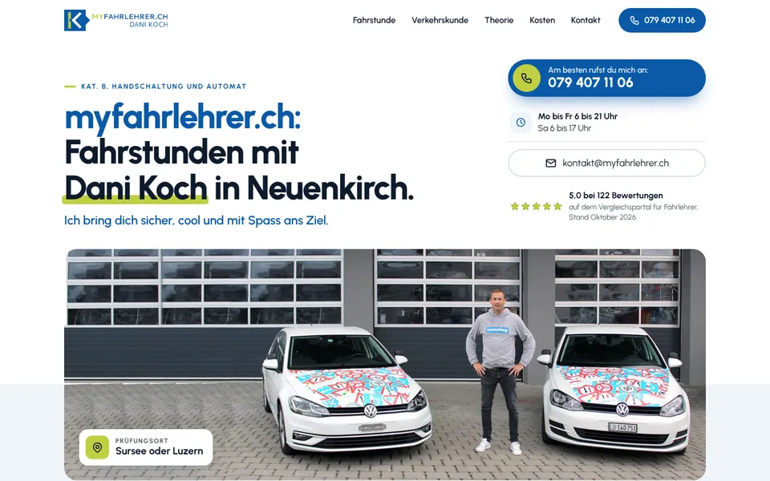
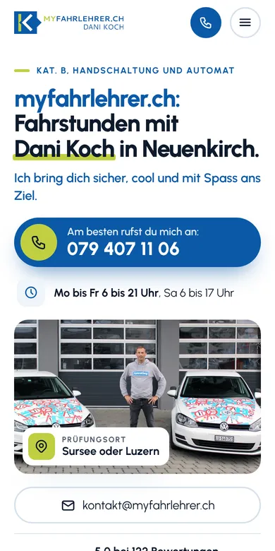

Design A
Dein Coach
Hell, frisch und sportlich in Blau und Lindgrün. Ihr Foto mit den zwei Golf zieht sich als breites Bildband über die Seite, darunter der klare Ablauf bis zur Prüfung in Sursee oder Luzern, die Feedbacks Ihrer Fahrschüler und Ihr Satz aus dem Radio-Interview. Wirkt offen und vertrauenswürdig, auch für Eltern.
- Hell
- Bildband
- Klarer Ablauf